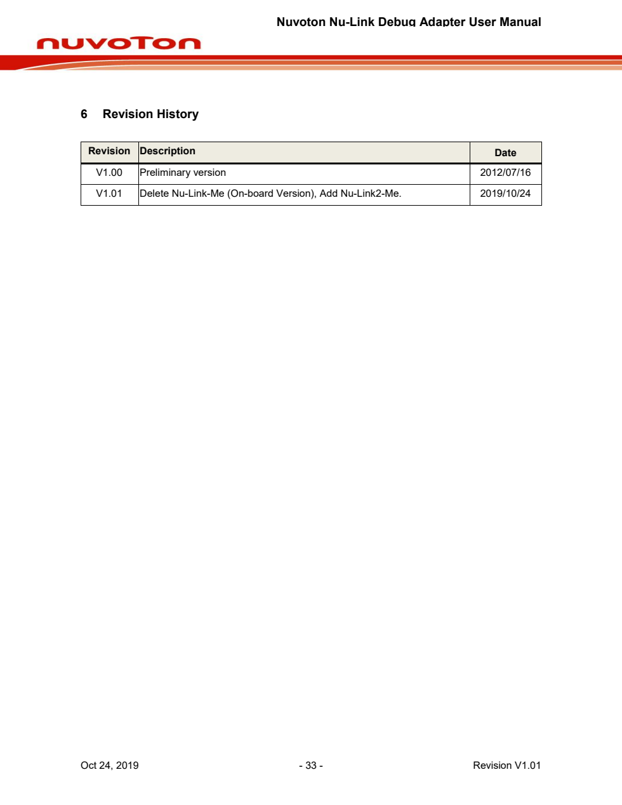

Detected Headings
- 6 Revision History
Detected Figures
- 없음
Detected Tables
- 없음
Extracted Lines
- Nuvoton Nu-Link Debug Adapter User Manual
- 6 Revision History
- Revision Description
- Date
- V1.00 Preliminary version 2012/07/16
- V1.01 Delete Nu-Link-Me (On-board Version), Add Nu-Link2-Me. 2019/10/24
- Oct 24, 2019 - 33 - Revision V1.01